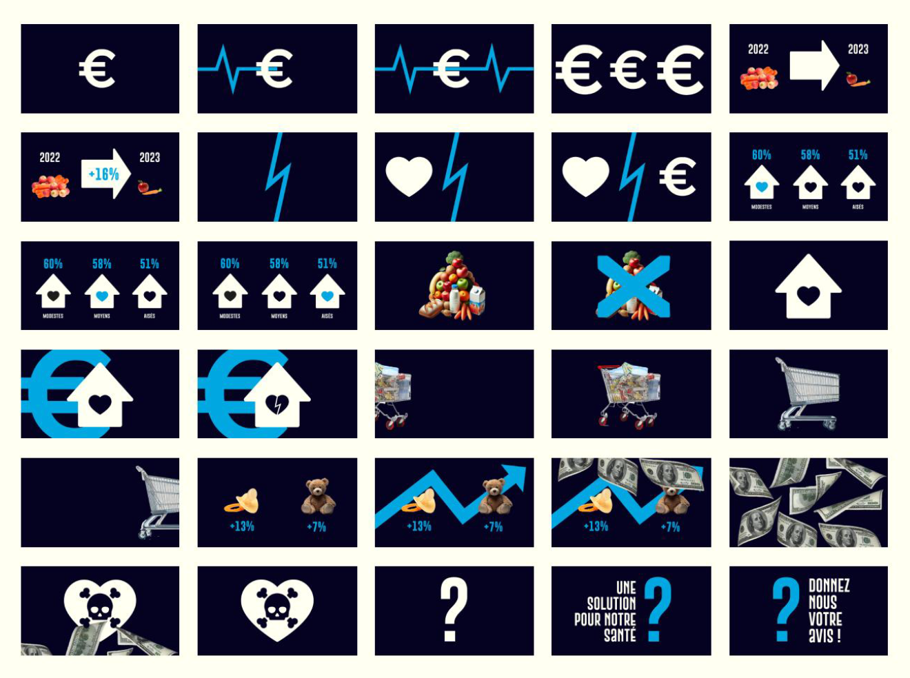
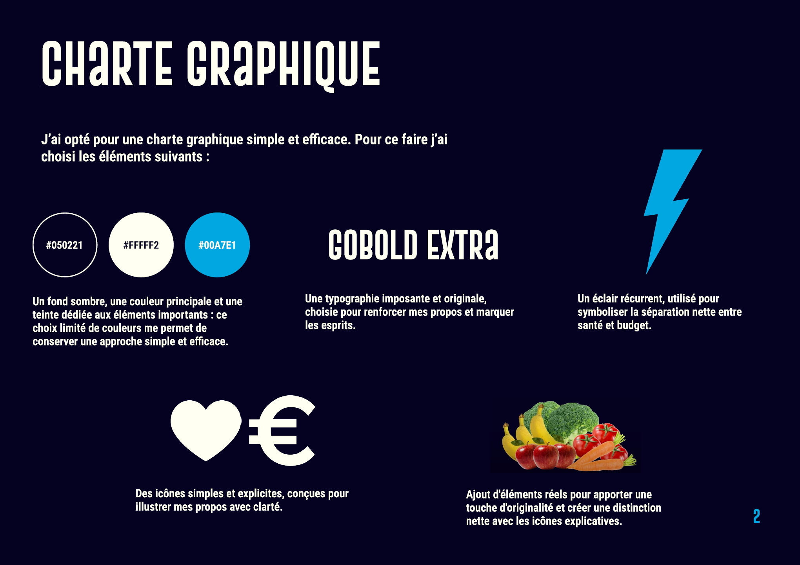

Production
Cette activité visait à nous initier à la modélisation de données complexes en supports visuels compréhensibles et attrayants.
Pour structurer ce travail, je me suis imposé plusieurs étapes clés.
Sélection des données :
J’ai d’abord sélectionné les données les plus pertinentes selon moi, puis défini un angle de traitement : l’impact de l’inflation des prix alimentaires sur la santé. Ensuite, j’ai dû comprendre réellement ces données, pour pouvoir les illustrer de la bonne manière.
Storyboard et animatique :
J’ai ensuite écrit le scénario, enregistré la voix off, et réalisé un storyboard détaillé pour planifier l’animation. J’ai également réalisé un animatique, pour pouvoir visionner au maximum le rendu final, et faire des modifications avant de me lancer dans l’animation.


Rendu final :
Enfin, j’ai fourni une charte graphique explicative avec la vidéo finale, pour expliquer au mieux mes intentions. Ce projet m’a permis de perfectionner mes compétences sur le logiciel, notamment en explorant les transitions, les effets et la synchronisation audio. J’ai également ajouté des bruitages subtils pour renforcer l’immersion et dynamiser la vidéo.
